1. 実習3の概要
実習3では、LTspice を使用して、高速な半加算器を設計し、伝搬遅延時間を評価します。さらに、高速化手法として、トランジスタのサイズ調整や段数の最適化を行い、回路の伝搬遅延時間を最小化し、効率的な設計を目指します。
- Transient 解析(過渡解析): 時間的に変化する入力信号に対して、回路がどのように応答するかを解析します。
- インバータチェイン: 実習2で作成したインバータを使用し、5段のインバータチェイン回路を設計します。
- 半加算器の設計: 半加算器は、AとBの2つの入力、S(和)とC(桁上げ)の2つの出力を持つ基本的な回路です。
- 高速化手法の検討: 回路設計において、伝搬遅延時間を最小化するための手法(トランジスタサイズの調整、段数の最適化など)を検討し、シミュレーション結果に基づいて改良します。
2. Transient 解析(過渡解析)
過渡解析は、時間変化する入力に対して回路の動作を解析する手法です。実習3では、DC解析に代わり、時間的に変化する信号に対して回路がどのように応答するかを確認します。具体的には、次の設定が行われます。
- 入力電圧の設定: 振幅 1V、周期 1ns のクロック信号を設定し、インバータチェインに入力されます。
- シミュレーション設定: Transient 解析の Stop time を 20ns に設定し、回路の動作を観察します。
3. インバータチェイン回路図の作成
インバータチェインは、複数のインバータを連続して接続した回路であり、伝搬遅延の評価において基本的なテスト回路として使用されます。インバータチェインは、複数のインバータを直列に接続して作成され、今回の実習3では5段構成とします。このチェインを用いることで、各段ごとの遅延を測定し、信号がどのように伝搬していくかをシミュレーションします。
手順
1. 回路図エディタの起動
LTspice を起動し、新しい回路図ファイルを作成します。ツールバーの「New Schematic」ボタンをクリックして、新しい回路図エディタを開きます。
2. インバータの配置
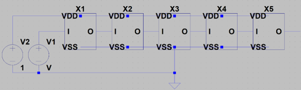ツールバーの「Select Component」ボタンを使用し、ライブラリからインバータ(INV)を選択します。最初の段に1つのインバータを配置し、後続の段に4つのインバータを直列に接続します。
注意:ここで、実習2でインバータ回路が正しく作成されていないと、正しい動作が得られません。インバータの設計が未完成の場合、このステップを進める前に実習2の内容を確認して、インバータを完成させる必要があります。
3. 接続と電源の配置
各インバータの出力を次のインバータの入力に接続します。回路全体を電源(VDD)およびグランド(GND)に接続し、電源を適切に設定します。
4. 入力信号の設定
最初のインバータに振幅 1V、周期 1ns のクロック信号を入力として設定します。これにより、インバータチェイン全体に時間的に変化する信号を供給します。
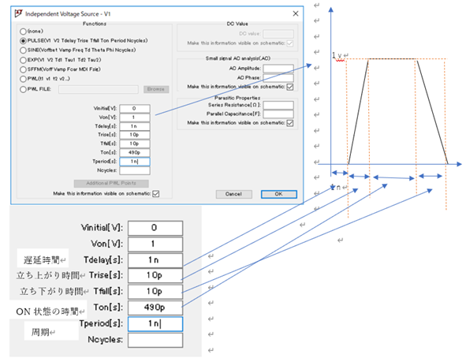5. Transient 解析の設定
次に、Transient 解析の設定を行います。メニューから Simulate > Edit Simulation Cmd を選択し、以下の設定を行います。
- Stop Time: 20ns
- Time to Start Saving Data: 0ns
- Maximum Timestep:自動設定
6. Transient 解析結果の表示
解析が終了したら、入力から順にインバータの各出力端子をプローブで確認します。これにより、各段での信号伝搬に伴う遅延を可視化し、結果を確認します。
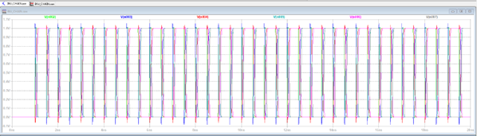各波形が重なって見えにくい場合は、Plot Setting > Add Plot Pane をクリックして表示スペースを増やしてください。その後、波形のラベルをドラッグして移動させることで、各波形を別々のスペースに表示できます。
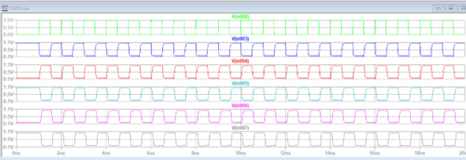7. 回路の保存は不要
このインバータチェイン回路は、特に今後利用する予定がないため、保存は不要です。
4. 解析精度の調整
LTspice での Transient 解析では、解析精度を調整することで、より詳細な結果を得ることができます。ここでは、解析精度を高めるための設定手順を説明します。
手順
1. Edit Simulation Command の表示
回路図上で、.tranの付近を右クリックし、Edit Simulation Command を選択します。これにより、解析条件を設定するウィンドウが表示されます。
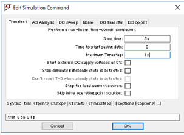2. 設定項目の調整
以下の項目を設定します:
- Stop Time(解析終了時間): 5ns
- Time to Start Saving Data(データ保存開始時間): 0ns
- Maximum Timestep (時間間隔の最大値): 1ps
解析における時間の最大間隔を設定します。より詳細な解析結果を得るために、1psと設定します。
3. 設定を確認
以上の設定を行った後、OK ボタンをクリックして解析設定を反映させます。
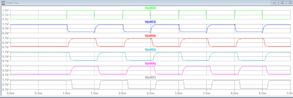4. 遅延時間の計測
LTspice では、伝搬遅延時間を自動で計測することが可能です。シミュレーション結果から、正確な遅延時間を求めるための手順を説明します。
手順
1. カーソル位置ではなく自動計測を使用
伝搬遅延時間は、手動でカーソルを動かして計測するのではなく、自動計測を使用して正確な値を取得します。
2. Spice Directive の設定
Edit → Spice Directive's(もしくはツールバーの一番右端にあるF、または回路図上で S を押す)を選択し、次のように計測条件を設定します:
.meas tran tpd_rise trig V(n004) val=0.5 cross=2 targ V(n005) val=0.5 cross=2.meas コマンドを入力
.meas コマンドを使ってシミュレーション結果から知りたい条件の測定値をログ・ファイルへ出力します。シミュレーション後、View → SPICE Error Log を選択するとログ・ファイルを確認できます。
.meas tran tpd_rise trig V(n004) val=0.5 cross=2 targ V(n005) val=0.5 cross=2- tpd_rise: ラベル
- trig (増加時の条件式): V(n004)が 0.5Vを2回目に横切る時刻(cross=2)をトリガーとして計測します。今回は n004 (X2 と X3の間の電圧)を測定します。
- targ (減少時の条件式): V(n005)が 0.5V を2回目に横切る時刻(cross=2)をターゲットとして計測します。今回は n005(X3 と X4の間の電圧)を測定します。
この設定により、n004の電圧値が0.5V を2回目に横切る時刻から、n005の電圧値が 0.5V を2回目に横切る時刻までを計測し、その結果を tpd_rise としてログファイルに記録します。
3. 結果の確認
シミュレーション結果に基づき、指定した信号の遷移タイミングが正しく記録され、遅延時間が正確に計測されたかを確認します。
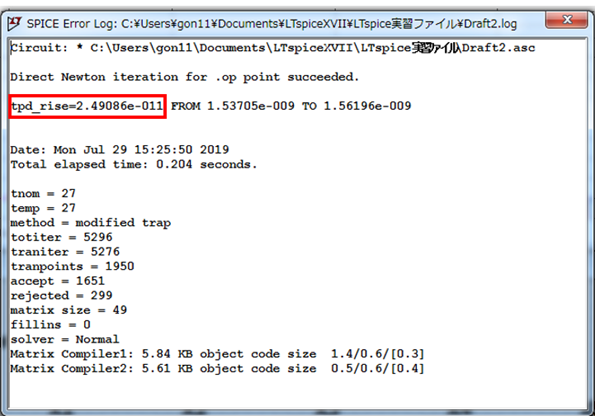半加算器の設計
実習3では、INVと2NAND を使用して半加算器を設計します。半加算器は、2つの入力 AとBに対して、和(S)と桁上げ(C)の2つの出力を生成する基本的な論理回路です。
1. 半加算器の基本動作
半加算器は、以下の2つの論理演算に基づいて出力を生成します:
- 和(S = A + B): 排他的論理和(XOR)によって、入力AとBが異なる場合にSが1になります。
- 桁上げ(C = A • B): 論理積(AND)によって、AとBが両方とも1のときにCが1になります。
2.真理値表
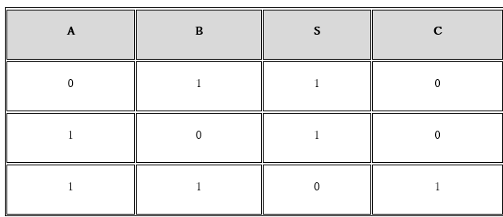この真理値表に基づき、和(S)と桁上げ(C)を得るための回路を設計します。
3. 半加算器の構成
実習3では、INVと2NANDのみを使用して半加算器を構成します。今回の設計例はあくまで一例であり、他の回路構成も可能です。使用するゲートの制限内で、遅延を最小化する工夫が必要です。
- INV ゲート(インバータ)で信号を反転させます。
- 2NAND ゲート(2入力 NAND ゲート)で XORや AND の動作を実現します。
4. 半加算器の回路図
以下に、INV と 2NAND を使って半加算器を構成する一例の回路図を提示します。
- XORの実現: 2NAND ゲートでXOR 回路を作成します。
- AND の実現: 2NAND ゲートでAND 回路を作成します。
これを参考に、入力A、Bから出力S、Cを得る回路を構成しますが、最適な回路設計には他のアプローチも考慮できます。
7. 半加算器の設計コンテスト
実習3では、設計した半加算器の伝搬遅延時間を評価し、その結果を基に設計コンテストを行います。このコンテストでは、半加算器の伝搬遅延時間を最小化するために工夫された設計が求められ、異なる負荷条件での回路動作が競われます。
1. コンテストの前提条件
前回のインバータと同様に、作成したインバータ、2NAND、およびシンボルがすべて同じフォルダに保存されていることが必要です。このフォルダ構成が正しくない場合、シミュレーションが正しく動作しない可能性があります。必ず、これらのファイルがすべて「LTspice 実習ファイル」内に存在していることを確認してください。
2. 半加算器のシンボルの作成
まず、半加算器のシンボルの中身を作成します。テキストでは、INV と 2NAND で構成されているため、これらを使用して回路を作成します。作成された回路が正しく動作することを確認してください。
回路の保存
回路が完成したら、「HA_sch」という名前で必ず保存してください。保存先は「LTspice 実習フォルダ」です。
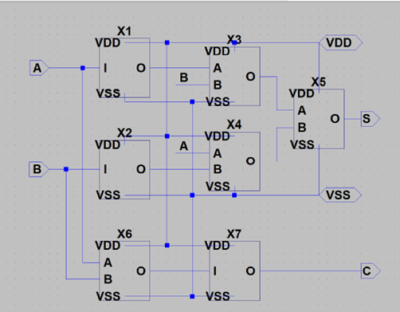3. シミュレーションファイルの実行
「LTspice 実習ファイル」には、以下の3つのシミュレーションファイルが存在しています:
- HA_sim_x1.asc
- HA_sim_x64.asc
- HA_sim_x256.asc
これらのファイルの中から、いずれか1つを選択し、実行してください。実行するファイルは負荷条件に応じて変わります(x1 は軽負荷、x256 は重負荷)。
4. 実行結果の確認
シミュレーションの結果として、A、B、S、Cの4つの波形が表示されます。テキストではクロック信号もプロービングされていますが、ここではA、B、S、Cの波形があれば十分です。
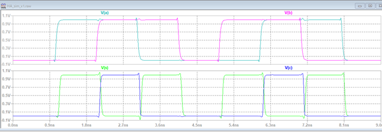波形の表示
シミュレーションの結果として、上段にA、Bの入力信号、下段にS、Cの出力信号が表示されます。この波形が理論値通りに動作していれば、設計は成功です。
5. コンテストの目的と負荷条件
半加算器の設計において、伝搬遅延時間を最小限に抑えることが主要な目標です。伝搬遅延時間が短いほど、回路が高速に動作するため、効率的な設計が高く評価されます。コンテストでは、以下の3つの負荷条件で回路が評価されます。
- ライト級: Cout = 1
- ミドル級: Cout = 64
- ヘビー級: Cout = 256
6. シミュレーションの実行と伝搬遅延時間の計測
各負荷条件における半加算器の動作を確認するために、シミュレーションファイル(HA_sim_x1, HA_sim_x64, HA_sim_x256)を使用します。以下のステップでシミュレーションを実行し、結果を確認します。
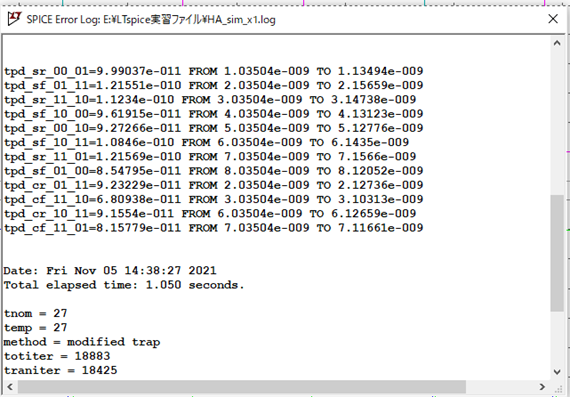1. シミュレーション設定の確認
各負荷条件に対応するシミュレーションファイルを開き、適切な解析設定が行われていることを確認します。
2. 伝搬遅延時間の計測
シミュレーション結果から、入力信号(A、B)の遷移に対する出力信号(S、C)の応答を確認し、各負荷条件での遅延時間を計測します。
7.評価基準
コンテストでは、以下の基準で設計が評価されます。
- 伝搬遅延時間の短さ: 回路の動作が速いほど高評価となります。特に、ヘビー級(Cout = 256)での遅延をいかに最小化できるかが重要です。
- 設計の工夫: ゲートの配置やトランジスタサイズの調整など、効率的な設計が評価されます。
シミュレーションコマンドの意味と結果の確認
ここでは、シミュレーションのコマンドが持つ意味を説明します。コマンドの内容を理解しないと、シミュレーション結果のどこに注目すれば良いのかが分かりません。テキストでは「ワードパッドで確認する」と記載されていますが、実際には View → SPICE Error Log から結果を表示できます。
.meas tran tpd_sr_00_01 trig V(clk) val=0.5 rise=1 targ V(s) val=0.5 rise=1
.meas tran tpd_sf_01_11 trig V(clk) val=0.5 rise=2 targ V(s) val=0.5 fall=1
.meas tran tpd_sr_11_10 trig V(clk) val=0.5 rise=3 targ V(s) val=0.5 rise=2
.meas tran tpd_sf_10_00 trig V(clk) val=0.5 rise=4 targ V(s) val=0.5 fall=2
.meas tran tpd_sr_00_10 trig V(clk) val=0.5 rise=5 targ V(s) val=0.5 rise=3
.meas tran tpd_sf_10_11 trig V(clk) val=0.5 rise=6 targ V(s) val=0.5 fall=3
.meas tran tpd_sr_11_01 trig V(clk) val=0.5 rise=7 targ V(s) val=0.5 rise=4
.meas tran tpd_sf_01_00 trig V(clk) val=0.5 rise=8 targ V(s) val=0.5 fall=4
.meas tran tpd_cr_01_11 trig V(clk) val=0.5 rise=2 targ V(c) val=0.5 rise=1
.meas tran tpd_cf_11_10 trig V(clk) val=0.5 rise=3 targ V(c) val=0.5 fall=1
.meas tran tpd_cr_10_11 trig V(clk) val=0.5 rise=6 targ V(c) val=0.5 rise=2
.meas tran tpd_cf_11_01 trig V(clk) val=0.5 rise=7 targ V(c) val=0.5 fall=2以下は、半加算器の遅延時間に関する各コマンドの説明です。
- tpd_sr_00_01: クロックが 0.5Vになる最初の立ち上がりの時点から、出力Sが0.5Vになる最初の立ち上がりまでの時間。
- tpd_sf_01_11: クロックが 0.5Vになる2回目の立ち上がりの時点から、出力Sが0.5Vになる最初の立ち下がりまでの時間。
- tpd_sr_11_10: クロックが 0.5V になる3回目の立ち上がりの時点から、出力 S が 0.5V になる2回目の立ち上がりまでの時間。
- tpd_sf_10_00: クロックが 0.5Vになる4回目の立ち上がりの時点から、出力Sが0.5V になる2回目の立ち下がりまでの時間。
- tpd_sr_00_10: クロックが 0.5Vになる5回目の立ち上がりの時点から、出力Sが0.5V になる3回目の立ち上がりまでの時間。
- tpd_sf_10_11: クロックが 0.5V になる6回目の立ち上がりの時点から、出力Sが0.5V になる3回目の立ち下がりまでの時間。
- tpd_sr_11_01: クロックが 0.5Vになる7回目の立ち上がりの時点から、出力Sが0.5V になる4回目の立ち上がりまでの時間。
- tpd_sf_01_00: クロックが 0.5Vになる8回目の立ち上がりの時点から、出力Sが0.5V になる4回目の立ち下がりまでの時間。
- tpd_cr_01_11: クロックが 0.5Vになる2回目の立ち上がりの時点から、出力Cが0.5Vになる最初の立ち上がりまでの時間。
- tpd_cf_11_10: クロックが 0.5V になる3回目の立ち上がりの時点から、出力 C が 0.5V になる最初の立ち下がりまでの時間。
- tpd_cr_10_11: クロックが 0.5Vになる6回目の立ち上がりの時点から、出力Cが0.5V になる2回目の立ち上がりまでの時間。
- tpd_cf_11_01: クロックが 0.5Vになる7回目の立ち上がりの時点から、出力Cが0.5V になる2回目の立ち下がりまでの時間。
8. トランスミッションゲートロジック
トランスミッションゲートロジックは、毎年実習の最後に例として紹介される回路です。実習の中では深くは取り上げられないものの、デジタル回路設計において非常に重要な概念であり、理解しておくことで今後の回路設計に役立ちます。特に、効率的な信号の伝達と制御を実現する手法として、トランスミッションゲートロジックの原理は知っておくべき重要なポイントです。
以下に、その仕組みと応用について説明します。
トランスミッションゲートロジックの基本構造
トランスミッションゲートロジックは、CMOS 技術を用いたデジタル回路設計手法の一つで、PMOSとNMOSトランジスタを並列に接続し、信号を効率的に伝達するための回路です。この構造により、信号の伝達(オン状態)と遮断(オフ状態)を制御でき、通常の CMOS ゲートに比べていくつかの利点があります。
動作原理
1. オン状態:
- NMOSのゲートに「0」、PMOS のゲートに「1」を入力すると、NMOS と PMOS の両方が導通状態になり、入力信号が出力へ伝達されます。
- 信号が「0」でも「1」でも正確に伝えられます(ロジックレベルが変わらない)。
2. オフ状態:
- NMOSのゲートに「1」、PMOS のゲートに「0」を入力すると、NMOS と PMOS の両方がオフになり、信号の伝達が遮断されます。
トランスミッションゲートロジックの応用
実習の中では、あまり詳細には触れませんが、トランスミッションゲートロジックは次のような応用があります:
- マルチプレクサ(Multiplexer, MUX): 複数の入力信号から1つの出力を選択する際、トランスミッションゲートが効率的に信号を選択・伝達します。
- パストランジスタロジック: 基本的な論理ゲート(AND, OR, XOR)をシンプルな回路で実現でき、トランジスタ数の削減や高速動作が可能です。
- レジスタファイルやメモリ回路: データの伝達や保存に使われ、シンプルで低消費電力なメモリ回路を構築するのに適しています。